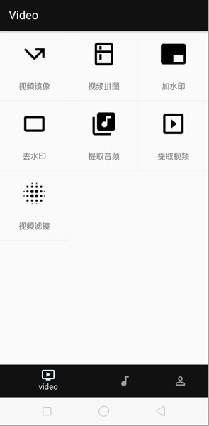

<!DOCTYPE html>
<html>
<head><meta name="generator" content="Hexo 3.9.0">
  <meta charset="utf-8">
  
  <title>Android 集成 FFmpeg (四) 轻松实现一个音视频编辑 App | what is your main focus for today?</title>
  <meta name="viewport" content="width=device-width, initial-scale=1, maximum-scale=1">
  <meta name="description" content="在网上看到一篇关于 FFmpeg 的文章，讲的大概是基于 FFmpeg 实现了一个 App，支持视频拼图等强大炫酷的音视频编辑功能，其原理是在 Android 端集成 FFmpeg，通过命令方式调用 FFmpeg。 尽管在 Android 端集成命令方式调用并不复杂，但一个具有强大炫酷音视频编辑功能的 App 是有价值的。由此启发，并决定敲下 Android 集成 FFmpeg 系列的第四篇，以一">
<meta name="keywords" content="FFmpeg">
<meta property="og:type" content="article">
<meta property="og:title" content="Android 集成 FFmpeg (四) 轻松实现一个音视频编辑 App">
<meta property="og:url" content="http://yhaowa.gitee.io/yhaowa/798144ac/index.html">
<meta property="og:site_name" content="what is your main focus for today?">
<meta property="og:description" content="在网上看到一篇关于 FFmpeg 的文章，讲的大概是基于 FFmpeg 实现了一个 App，支持视频拼图等强大炫酷的音视频编辑功能，其原理是在 Android 端集成 FFmpeg，通过命令方式调用 FFmpeg。 尽管在 Android 端集成命令方式调用并不复杂，但一个具有强大炫酷音视频编辑功能的 App 是有价值的。由此启发，并决定敲下 Android 集成 FFmpeg 系列的第四篇，以一">
<meta property="og:locale" content="zh-CN">
<meta property="og:image" content="http://yhaowa.gitee.io/yhaowa/img/19.jpg">
<meta property="og:updated_time" content="2020-12-06T06:59:08.601Z">
<meta name="twitter:card" content="summary">
<meta name="twitter:title" content="Android 集成 FFmpeg (四) 轻松实现一个音视频编辑 App">
<meta name="twitter:description" content="在网上看到一篇关于 FFmpeg 的文章，讲的大概是基于 FFmpeg 实现了一个 App，支持视频拼图等强大炫酷的音视频编辑功能，其原理是在 Android 端集成 FFmpeg，通过命令方式调用 FFmpeg。 尽管在 Android 端集成命令方式调用并不复杂，但一个具有强大炫酷音视频编辑功能的 App 是有价值的。由此启发，并决定敲下 Android 集成 FFmpeg 系列的第四篇，以一">
<meta name="twitter:image" content="http://yhaowa.gitee.io/yhaowa/img/19.jpg">
  
    <link rel="alternative" href="/atom.xml" title="what is your main focus for today?" type="application/atom+xml">
  
  
    <link rel="icon" href="/favicon.png">
  
  <link rel="stylesheet" href="/yhaowa/css/style.css">
  <!--[if lt IE 9]><script src="//cdnjs.cloudflare.com/ajax/libs/html5shiv/3.7/html5shiv.min.js"></script><![endif]-->
  
</head></html>
<body>
<div id="container">
  <div id="wrap">
    <header id="header">
  <div id="banner"></div>
  <div id="header-outer" class="outer">
    <div id="header-title" class="inner">
      <h1 id="logo-wrap">
        <a href="/yhaowa/" id="logo">what is your main focus for today?</a>
      </h1>
      
    </div>
    <div id="header-inner" class="inner">
      <nav id="main-nav">
        <a id="main-nav-toggle" class="nav-icon"></a>
        
          <a class="main-nav-link" href="/yhaowa/">首页</a>
        
          <a class="main-nav-link" href="/yhaowa/archives">归档</a>
        
      </nav>
      <nav id="sub-nav">
        
          <a id="nav-rss-link" class="nav-icon" href="/atom.xml" title="RSS Feed"></a>
        
        <a id="nav-search-btn" class="nav-icon" title="Search"></a>
      </nav>
      <div id="search-form-wrap">
        <form action="//www.baidu.com/baidu" method="get" accept-charset="utf-8" class="search-form">
          <input type="search" name="word" maxlength="20" class="search-form-input" placeholder="Search">
          <input type="submit" value="" class="search-form-submit">
          <input name=tn type=hidden value="bds">
          <input name=cl type=hidden value="3">
          <input name=ct type=hidden value="2097152">
          <input type="hidden" name="si" value="yhaowa.gitee.io/yhaowa">
        </form>
      </div>
    </div>
  </div>
</header>
    <div class="outer">
      <section id="main"><article id="post-Android-集成-FFmpeg-四-轻松实现一个音视频编辑-App" class="article article-type-post" itemscope itemprop="blogPost">
  <div class="article-meta">
    <a href="/yhaowa/798144ac/" class="article-date">
  <time datetime="2019-06-16T12:07:18.000Z" itemprop="datePublished">2019-06-16</time>
</a>
    
  <div class="article-category">
    <a class="article-category-link" href="/yhaowa/categories/音视频/">音视频</a>
  </div>

  </div>
  <div class="article-inner">
    
    
      <header class="article-header">
        
  
    <h1 class="article-title" itemprop="name">
      Android 集成 FFmpeg (四) 轻松实现一个音视频编辑 App
    </h1>
  

      </header>
    
    <div class="article-entry" itemprop="articleBody">
      
        <p>在网上看到一篇关于 FFmpeg 的文章，讲的大概是基于 FFmpeg 实现了一个 App，支持视频拼图等强大炫酷的音视频编辑功能，其原理是在 Android 端集成 FFmpeg，通过命令方式调用 FFmpeg。</p>
<p>尽管在 Android 端集成命令方式调用并不复杂，但一个具有强大炫酷音视频编辑功能的 App 是有价值的。由此启发，并决定敲下 Android 集成 FFmpeg 系列的第四篇，以一个实际应用的方式展现 FFmpeg 强大的音视频编辑功能。</p>
<a id="more"></a>
<p>应用截图：</p>
<p></p>
<blockquote>
<p>源码：<a href="https://github.com/yhaolpz/FFmpegCmd" target="_blank" rel="noopener">https://github.com/yhaolpz/FFmpegCmd</a></p>
</blockquote>
<p>若想实现更多效果，见 <a href="http://ffmpeg.org/ffmpeg.html" target="_blank" rel="noopener">ffmpeg Documentation</a>，应用代码非常简单，这里就不再过多阐述，直接查看源码，一看即懂，理论知识及编译实现见前三篇：</p>
<blockquote>
<p><a href="https://yhaolpz.github.io/e0b4d9fc/" target="_blank" rel="noopener">Android 集成 FFmpeg (一) 基础知识及简单调用</a><br><a href="https://yhaolpz.github.io/ddeb5551/" target="_blank" rel="noopener">Android 集成 FFmpeg (二) 以命令方式调用 FFmpeg</a><br><a href="https://yhaolpz.github.io/8837781/" target="_blank" rel="noopener">Android 集成 FFmpeg (三) 获取 FFmpeg 执行进度</a></p>
</blockquote>

      
    </div>
    <footer class="article-footer">
      
        <a data-url="http://yhaowa.gitee.io/yhaowa/798144ac/" data-id="ckkxdypgs001votca9j6b4yam" class="article-share-link" data-share="baidu" data-title="Android 集成 FFmpeg (四) 轻松实现一个音视频编辑 App">分享到</a>
      

      

      
  <ul class="article-tag-list"><li class="article-tag-list-item"><a class="article-tag-list-link" href="/yhaowa/tags/FFmpeg/">FFmpeg</a></li></ul>

    </footer>
  </div>
  
    
<nav id="article-nav">
  
    <a href="/yhaowa/a608ff50/" id="article-nav-newer" class="article-nav-link-wrap">
      <strong class="article-nav-caption">下一篇</strong>
      <div class="article-nav-title">
        
          Framework &amp; startActivity
        
      </div>
    </a>
  
  
    <a href="/yhaowa/2296ca3/" id="article-nav-older" class="article-nav-link-wrap">
      <strong class="article-nav-caption">上一篇</strong>
      <div class="article-nav-title">Android OpenGL ES（二）绘制三角形</div>
    </a>
  
</nav>

  
</article>

</section>
      
      <aside id="sidebar">
  
    
  <div class="widget-wrap">
    <h3 class="widget-title">分类</h3>
    <div class="widget">
      <ul class="category-list"><li class="category-list-item"><a class="category-list-link" href="/yhaowa/categories/Android/">Android</a><span class="category-list-count">13</span></li><li class="category-list-item"><a class="category-list-link" href="/yhaowa/categories/Framework/">Framework</a><span class="category-list-count">10</span></li><li class="category-list-item"><a class="category-list-link" href="/yhaowa/categories/Java/">Java</a><span class="category-list-count">3</span></li><li class="category-list-item"><a class="category-list-link" href="/yhaowa/categories/深度学习/">深度学习</a><span class="category-list-count">1</span></li><li class="category-list-item"><a class="category-list-link" href="/yhaowa/categories/网络/">网络</a><span class="category-list-count">1</span></li><li class="category-list-item"><a class="category-list-link" href="/yhaowa/categories/音视频/">音视频</a><span class="category-list-count">11</span></li></ul>
    </div>
  </div>

  
    
  <div class="widget-wrap">
    <h3 class="widget-title">标签云</h3>
    <div class="widget tagcloud">
      <a href="/yhaowa/tags/ANativeWindow/" style="font-size: 10px;">ANativeWindow</a> <a href="/yhaowa/tags/APT/" style="font-size: 10px;">APT</a> <a href="/yhaowa/tags/Ashmem/" style="font-size: 10px;">Ashmem</a> <a href="/yhaowa/tags/Autolock/" style="font-size: 10px;">Autolock</a> <a href="/yhaowa/tags/BinderProxy/" style="font-size: 10px;">BinderProxy</a> <a href="/yhaowa/tags/BpBinder/" style="font-size: 10px;">BpBinder</a> <a href="/yhaowa/tags/BufferQueue/" style="font-size: 10px;">BufferQueue</a> <a href="/yhaowa/tags/COW/" style="font-size: 10px;">COW</a> <a href="/yhaowa/tags/Caffe/" style="font-size: 10px;">Caffe</a> <a href="/yhaowa/tags/FFmpeg/" style="font-size: 20px;">FFmpeg</a> <a href="/yhaowa/tags/Fmod/" style="font-size: 10px;">Fmod</a> <a href="/yhaowa/tags/GUI/" style="font-size: 10px;">GUI</a> <a href="/yhaowa/tags/Glide/" style="font-size: 10px;">Glide</a> <a href="/yhaowa/tags/Gralloc/" style="font-size: 10px;">Gralloc</a> <a href="/yhaowa/tags/HTTPS/" style="font-size: 10px;">HTTPS</a> <a href="/yhaowa/tags/IPCThreadState/" style="font-size: 10px;">IPCThreadState</a> <a href="/yhaowa/tags/JavaPoet/" style="font-size: 10px;">JavaPoet</a> <a href="/yhaowa/tags/LMK/" style="font-size: 10px;">LMK</a> <a href="/yhaowa/tags/Linux-IPC/" style="font-size: 10px;">Linux IPC</a> <a href="/yhaowa/tags/Linux-driver/" style="font-size: 10px;">Linux driver</a> <a href="/yhaowa/tags/Mutex/" style="font-size: 10px;">Mutex</a> <a href="/yhaowa/tags/OpenGL/" style="font-size: 12.5px;">OpenGL</a> <a href="/yhaowa/tags/ProcessState/" style="font-size: 10px;">ProcessState</a> <a href="/yhaowa/tags/RecycleView/" style="font-size: 12.5px;">RecycleView</a> <a href="/yhaowa/tags/Service-Manager/" style="font-size: 10px;">Service Manager</a> <a href="/yhaowa/tags/SoundTouch/" style="font-size: 10px;">SoundTouch</a> <a href="/yhaowa/tags/TCP/" style="font-size: 10px;">TCP</a> <a href="/yhaowa/tags/UDP/" style="font-size: 10px;">UDP</a> <a href="/yhaowa/tags/Ubuntu/" style="font-size: 10px;">Ubuntu</a> <a href="/yhaowa/tags/ViewModel/" style="font-size: 10px;">ViewModel</a> <a href="/yhaowa/tags/ams/" style="font-size: 10px;">ams</a> <a href="/yhaowa/tags/aop/" style="font-size: 10px;">aop</a> <a href="/yhaowa/tags/asm/" style="font-size: 10px;">asm</a> <a href="/yhaowa/tags/binder/" style="font-size: 15px;">binder</a> <a href="/yhaowa/tags/cmake/" style="font-size: 10px;">cmake</a> <a href="/yhaowa/tags/epoll/" style="font-size: 10px;">epoll</a> <a href="/yhaowa/tags/h264/" style="font-size: 10px;">h264</a> <a href="/yhaowa/tags/handler/" style="font-size: 12.5px;">handler</a> <a href="/yhaowa/tags/ijkplayer/" style="font-size: 15px;">ijkplayer</a> <a href="/yhaowa/tags/kotlin/" style="font-size: 10px;">kotlin</a> <a href="/yhaowa/tags/log/" style="font-size: 10px;">log</a> <a href="/yhaowa/tags/mmap/" style="font-size: 12.5px;">mmap</a> <a href="/yhaowa/tags/plugin/" style="font-size: 10px;">plugin</a> <a href="/yhaowa/tags/service/" style="font-size: 10px;">service</a> <a href="/yhaowa/tags/startActivity/" style="font-size: 10px;">startActivity</a> <a href="/yhaowa/tags/surface/" style="font-size: 10px;">surface</a> <a href="/yhaowa/tags/vsync/" style="font-size: 10px;">vsync</a> <a href="/yhaowa/tags/window/" style="font-size: 12.5px;">window</a> <a href="/yhaowa/tags/wms/" style="font-size: 10px;">wms</a> <a href="/yhaowa/tags/侧滑菜单/" style="font-size: 12.5px;">侧滑菜单</a> <a href="/yhaowa/tags/内部类/" style="font-size: 10px;">内部类</a> <a href="/yhaowa/tags/刘海屏适配/" style="font-size: 10px;">刘海屏适配</a> <a href="/yhaowa/tags/单例/" style="font-size: 10px;">单例</a> <a href="/yhaowa/tags/并发编程/" style="font-size: 10px;">并发编程</a> <a href="/yhaowa/tags/开发模式/" style="font-size: 10px;">开发模式</a> <a href="/yhaowa/tags/总结/" style="font-size: 10px;">总结</a> <a href="/yhaowa/tags/悬浮窗/" style="font-size: 10px;">悬浮窗</a> <a href="/yhaowa/tags/比特率/" style="font-size: 10px;">比特率</a> <a href="/yhaowa/tags/线程池/" style="font-size: 10px;">线程池</a> <a href="/yhaowa/tags/网络/" style="font-size: 10px;">网络</a> <a href="/yhaowa/tags/虚拟内存/" style="font-size: 10px;">虚拟内存</a> <a href="/yhaowa/tags/读书笔记/" style="font-size: 17.5px;">读书笔记</a> <a href="/yhaowa/tags/采样率/" style="font-size: 10px;">采样率</a>
    </div>
  </div>

  
    
  <div class="widget-wrap">
    <h3 class="widget-title">近期文章</h3>
    <div class="widget">
      <ul>
        
          <li>
            <a href="/yhaowa/625d4c7c/">TCP/IP 网络协议知识点总结</a>
          </li>
        
          <li>
            <a href="/yhaowa/28077273/">Android APT 开发实践</a>
          </li>
        
          <li>
            <a href="/yhaowa/649d55e5/">Android Handler epoll 机制分析</a>
          </li>
        
          <li>
            <a href="/yhaowa/f9fd2518/">开发编写的 View 控件，是怎么变成屏幕上图像的？</a>
          </li>
        
          <li>
            <a href="/yhaowa/52cb86d4/">Android 消息屏障与异步消息</a>
          </li>
        
      </ul>
    </div>
  </div>

  
    
  <div class="widget-wrap">
    <h3 class="widget-title">友情链接</h3>
    <div class="widget">
      <ul>
        
          <li>
            <a href="https://github.com/yhaolpz" target="_blank">我的「GitHub」</a>
          </li>
        
          <li>
            <a href="http://blog.csdn.net/yhaolpz" target="_blank">我的「CSDN」</a>
          </li>
        
          <li>
            <a href="https://moonshoter.github.io/" target="_blank">Moonshot</a>
          </li>
        
      </ul>
    </div>
  </div>

  
</aside>
      
    </div>
    <footer id="footer">
  
  <div class="outer">
    <div id="footer-info" class="inner">
      &copy; 2021 Ahab<br>
      Powered by <a href="//hexo.io/" target="_blank">Hexo</a>
      .
      Theme by <a href="https://github.com/xiangming/landscape-plus" target="_blank">Landscape-plus</a>
    </div>
  </div>
</footer>
  </div>
  <nav id="mobile-nav">
  
    <a href="/yhaowa/" class="mobile-nav-link">首页</a>
  
    <a href="/yhaowa/archives" class="mobile-nav-link">归档</a>
  
</nav>
  <!-- totop start -->
<div id="totop">
<a title="返回顶部"></a>
</div>

<!-- totop end -->


<!-- 百度分享 start -->

<div id="article-share-box" class="article-share-box">
  <div id="bdshare" class="bdsharebuttonbox article-share-links">
    <a class="article-share-weibo" data-cmd="tsina" title="分享到新浪微博"></a>
    <a class="article-share-weixin" data-cmd="weixin" title="分享到微信"></a>
    <a class="article-share-qq" data-cmd="sqq" title="分享到QQ"></a>
    <a class="article-share-renren" data-cmd="renren" title="分享到人人网"></a>
    <a class="article-share-more" data-cmd="more" title="更多"></a>
  </div>
</div>
<script>
  function SetShareData(cmd, config) {
    if (shareDataTitle && shareDataUrl) {
      config.bdText = shareDataTitle;
      config.bdUrl = shareDataUrl;
    }
    return config;
  }
  window._bd_share_config={
    "common":{onBeforeClick: SetShareData},
    "share":{"bdCustomStyle":"/yhaowa/css/bdshare.css"}
  };
  with(document)0[(getElementsByTagName('head')[0]||body).appendChild(createElement('script')).src='//bdimg.share.baidu.com/static/api/js/share.js?cdnversion='+~(-new Date()/36e5)];
</script>

<!-- 百度分享 end -->

<script src="//cdnjs.cloudflare.com/ajax/libs/jquery/1.11.1/jquery.min.js"></script>


  <link rel="stylesheet" href="/yhaowa/fancybox/jquery.fancybox.css">
  <script src="/yhaowa/fancybox/jquery.fancybox.pack.js"></script>


<! -- mathjax config similar to math.stackexchange -->

<script type="text/x-mathjax-config">
MathJax.Hub.Config({
tex2jax: {
          inlineMath: [ ['$','$'], ["\\(","\\)"]  ],
                processEscapes: true
                    
}
  
        });
</script>

<script type="text/x-mathjax-config">
MathJax.Hub.Config({
tex2jax: {
            skipTags: ['script', 'noscript', 'style', 'textarea', 'pre', 'code']
                  
}
    
        });
</script>

<script type="text/x-mathjax-config">
MathJax.Hub.Queue(function() {
            var all = MathJax.Hub.getAllJax(), i;
            for(i=0; i < all.length; i += 1) {
                            all[i].SourceElement().parentNode.className += ' has-jax';
                                    
            }
                
        });
</script>

<script type="text/javascript" src="//cdn.bootcss.com/mathjax/2.5.3/MathJax.js?config=TeX-AMS-MML_HTMLorMML">
</script>


<script src="/yhaowa/js/script.js"></script>

</div>
</body>
</html>
